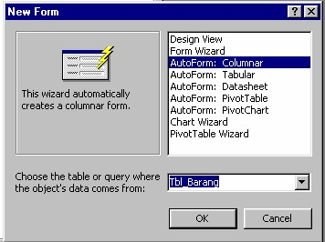

Form digunakan untuk merepresentasikan ke user atau menerima inputan dari user data-data dalam tabel/query dalam bentuk interface grid, tombol, dan lain-lain kontrol windows. form dalam access bisa dimasukkan ke dalam form lain sebagai control sub form, biasanya jika bekerja dalam transaksi master-detail.
Membuat Form Barang untuk maintenance data barang.
1. Pada Jendela database pilih Form, lalu klik Create Form in Desing wizard, klik New.Pada Jendela New Form pilih Auto Form Columnar, lalu pilih sumber datanya, caranya kita klik tombol panah ke bawah pilih Tbl_Barang klik OK.

Hasilnya
Kita lihat form yang dihasilkan. Untuk memodifikasinya klik Icon Design pada Toolbar.
2. Pada mode design Atur Form agar bisa kita tambahkan control-control yang lain.
3. Tambahkan Tombol untuk menambah data caranya. Pada toolbox klik Command Button lalu letakan pada Form akan muncul jendela Command Buttom Wizards, pada Categories pilih Record Operations, pada Actions Pilih Add New Record. Klik Next pada Text ketik Tambah lalu klik Next, ketikan nama untuk command button ini ketik saja cmd_Tambah lalu klik Finish.
Gambar Tool Box
4. Tambahkan Tombol untuk menghapus data caranya. Pada toolbox klik Command Button lalu letakan pada Form akan muncul jendela Command Buttom Wizards, Pada Categories pilih Record Operations, pada Actions Pilih Delete Record. Klik Next pada Text ketik Hapus lalu klik Next, ketikan nama untuk command button ini ketik saja cmd_Hapus lalu klik Finish.
5. Tambahkan Tombol untuk menyimpan data caranya. Pada toolbox klik Command Button lalu letakan pada Form akan muncul jendela Command Buttom Wizards, Pada Categories pilih Record Operations, pada Actions Pilih Save Record. Klik Next pada Text ketik Simpan lalu klik Next, ketikan nama untuk command button ini ketik saja cmd_Simpan lalu klik Finish.
6. Tambahkan Tombol untuk Keluar dari Form caranya. Pada toolbox klik Command Button lalu letakan pada Form akan muncul jendela Command Buttom Wizards, Pada Categories pilih Form Operations, pada Actions Pilih Close Form. Klik Next pada Text ketik Keluar lalu klik Next, ketikan nama untuk command button ini ketik saja cmd_Keluar lalu klik Finish.
7. Tambahkan combo box untuk mencarida data barang. Caranya block semua control lalu geser kebawah. Pada Toolbox Klik Combo Box pada Combo Box Wizard pilih Find a record on my form based on the value I selected in my Combo Box. Klik Next Pilih Kode Barang jika kita ingin mencari berdasarkan kode barang klik tombol > lalu klik Next, klik Next lagi. Ketikan Klik disini untuk mencari kode barang lalu klik Finish.
8. Tambahkan Label untuk membuat Judul Form. Pada Toolbox klik Label lalu gambarkan di Form Kemudian didalam label tersebut ketikan "Maintenance Data Barang"
9. Setelah selesai dibuat Simpan Form dengan nama frm_Barang
Pembuatan Form Data Barang sudah selesai dan silahkan di test apakah tobol-tombol yang ada sudah berfungsi dengan benar.
Agar Form kelihatan lebih bagus anda bisa mendesain letak-letak control menurut selera Kita.
Pada Form diatas Dividing Line, Record Selector, ScrollBar dan Navigation Button masih muncul untuk menghilangkannya masuk ke mode design lalu klik kotak ujung kanan atas Form kemudian klik kanan lalu pilih properties(ini dilakukan jika jendela properties belum ada). Pada jendela properties set propertiesnya seperti gambar dibawah ini
Ini Gambar Form yang sudah saya sempurnakan.
Kalau kamu memang sudah bisa bikin Form coba buat Form Data Karyawan, caranya sama dengan pembuatan Form
Copyright © Herlan Lesmana
Created with the Freeware Edition of HelpNDoc: Free CHM Help documentation generator